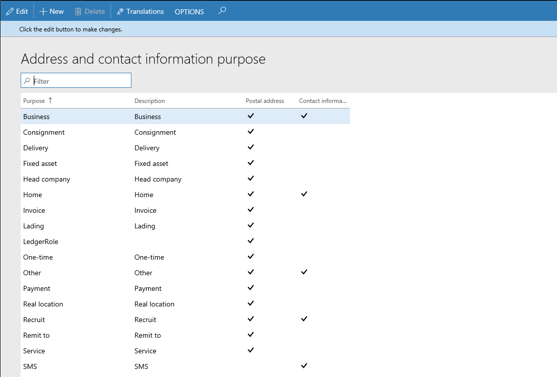
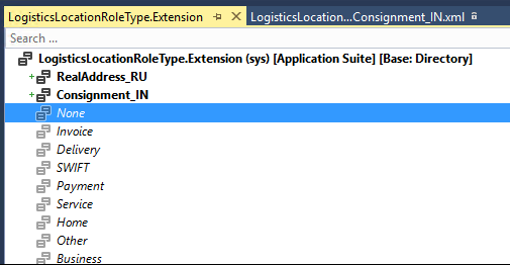
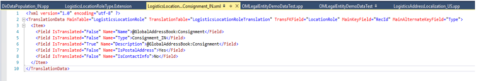
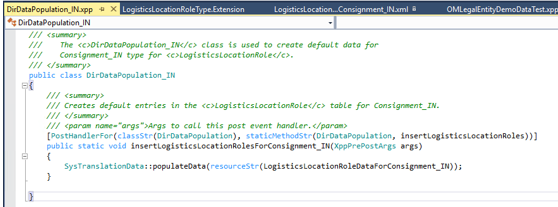
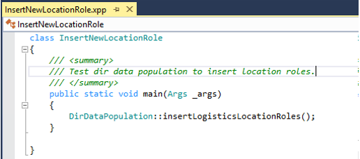
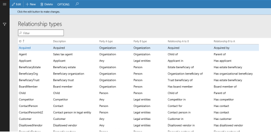
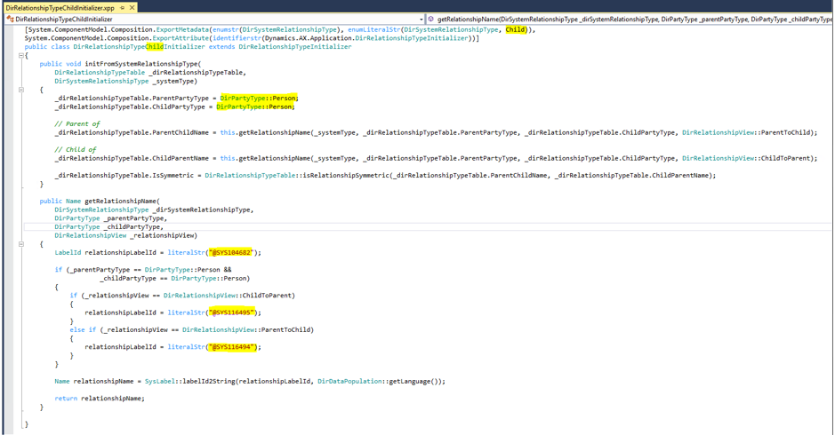
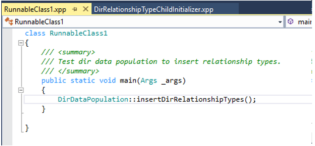

Standort- und Parteibeziehungstypen hinzufügen
Important
Dynamics 365 for Finance and Operations hat sich zu speziell entwickelten Anwendungen entwickelt, mit denen Sie bestimmte Geschäftsfunktionen verwalten können. Weitere Informationen zu diesen Änderungen finden Sie im Dynamics 365-Lizenzierungshandbuch.
Lagerplatzrollen hinzufügen
Es gibt zwei Möglichkeiten, neue Standortrollen für Adress- und Kontaktinformationen hinzuzufügen:
Fügen Sie es über die Seite Adresse und Kontaktinformationen hinzu. Die neue Rolle wird in der Tabelle LogisticsLocationRole mit Typ = 0 gespeichert, was bedeutet, dass die Rolle keine Systemrolle ist, die in der LogisticsLocationRoleType Enumeration und ihren Erweiterungen definiert ist. Ein Benutzer kann diese Rolle bei der Erstellung von Adress- oder Kontaktinformationen verwenden.

Fügen Sie diese der Enumerationserweiterung LogisticsLocationRoleType hinzu und lassen Sie es über den Datenbanksynchronisierungsprozess auffüllen.
Erstellen Sie eine Erweiterung zur LogisticsLocationRoleType Enumeration und fügen Sie dann die neue Rolle der Erweiterung hinzu.

Erstellen Sie eine neue Ressourcendatei für die neue Rolle und weisen Sie anschließend einen Wert für deren Eigenschaften zu.

Erstellen Sie eine Datenenauffüllungsklasse und stellen Sie eine Handlermethode zur Verfügung, um die neue Rolle zu füllen.

Um das Auffüllen der neuen Standortrolle zu testen, können Sie eine lauffähige Klasse erstellen und DirDataPopulation::insertLogisticsLocationRoles() in Main() aufrufen. Nachdem dieser Vorgang abgeschlossen ist, sollten Sie die neue Rolle in der Tabelle LogisticsLocationRole mit dem Typ > 0 sehen. Die neue Rolle wird auf der Seite Adresse und Kontaktinformationen angezeigt.

Neue Parteibeziehungstypen hinzufügen
Es gibt zwei Möglichkeiten, einen neuen Beziehungstyp hinzuzufügen:
Fügen Sie sie über die Seite Beziehungstypen hinzu. Die neue Beziehung wird unter DirRelationshipTypeTable mit systemtype = 0 gespeichert.

Fügen Sie diese der Erweiterung der DirSystemRelationshipType Enumeration hinzu und lassen Sie es über den Datenbanksynchronisierungsprozess auffüllen.
Erstellen Sie eine Erweiterung zur DirSystemRelationshipType Enumeration und fügen Sie den neuen Beziehungstyp hinzu.
Legen Sie einen Initialisierer für diesen neuen Typ an. Sie finden mehrere Beispiele im Kerncode, eines davon ist DirRelationshipTypeChildInitialize. Dies ist eine Initialisierungsklasse für den Parteienbeziehungstyp "Child". Sie können mit Ihrem Initializer beginnen, indem Sie diesen Code kopieren und einfügen und dann die markierten Bereiche aktualisieren.

Um das Auffüllen des neuen Beziehungstyps zu testen, können Sie eine lauffähige Klasse erstellen und DirDataPopulation::insertDirRelationshipTypes() in Main() aufrufen. Sie sollten den neuen Beziehungstyp in der DirRelationshipTypeTable sehen, und der neue Beziehungstyp wird auf der Seite Beziehungstypen verfügbar sein.
